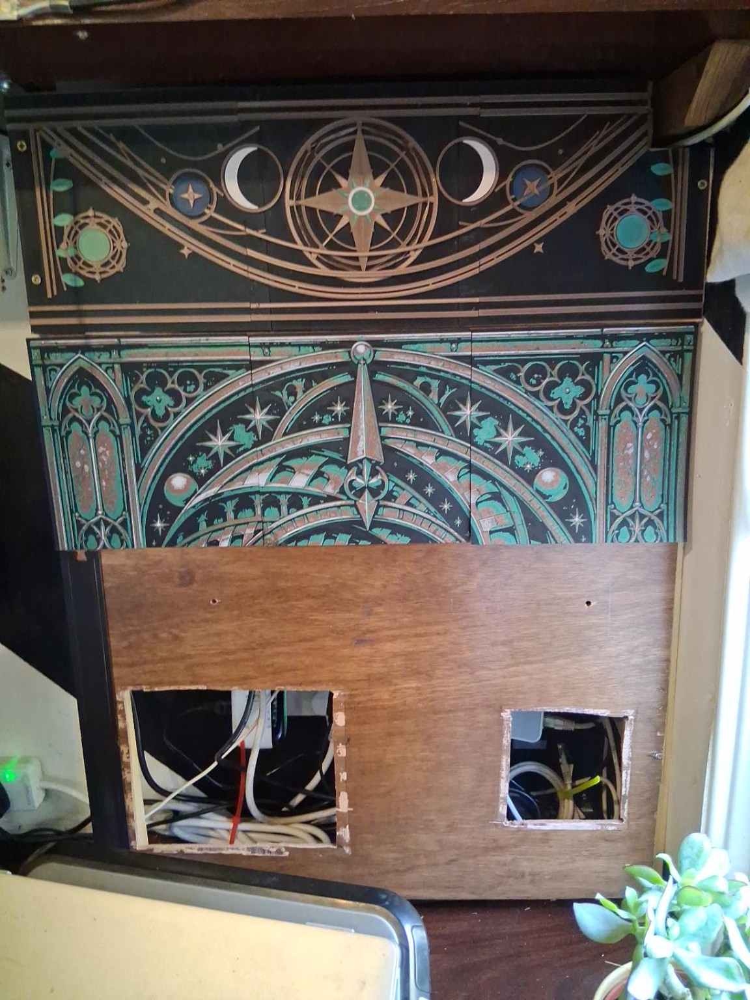

It started with light
The first direction involved translucent panels, addressable LEDs and a cabinet screen that could glow. Those experiments were useful, but the door itself kept becoming more complicated: moving parts, lighting space, alignment and access all had to cooperate.
The better answer was flatter and more direct. The artwork became the main event, and HueForge offered a way to build colour and depth from ordinary filament without turning the door into a lightbox.
Nine pieces, one door
The final door artwork was divided into nine printable tiles. Each tile had to preserve the copper orbital lines, jade details, Gothic side structures and dark starfield while still meeting its neighbours cleanly.
Printed separately, the joins are easy to imagine becoming the whole story. Lightly fitted to the cabinet, they recede. The arcs and architectural lines carry across them, and the nine panels read as one slightly impossible observatory.
Installed is not the same as finished
All nine tiles are printed and have been lightly fixed in place for the first complete installation view. That is a successful physical milestone, but not a claim that the Reliquary is finished.
Permanent attachment, edge finishing, the lower threshold and keeper, and a quieter treatment for the cabinet's left flank still remain. The existing upper frieze stays for now; it will be judged again after the surrounding architecture is complete.
The photograph above is the original user-supplied installation image. Earlier AI-generated design studies remain concept artwork and are not being presented here as unenhanced photographs.
← Back to the cabinet